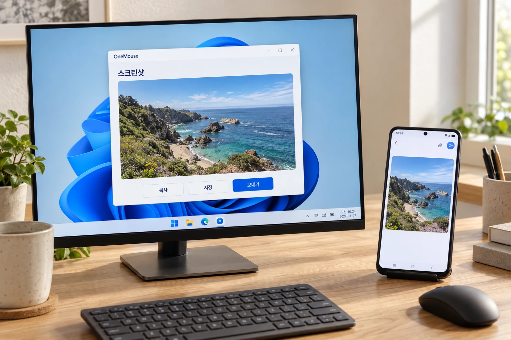
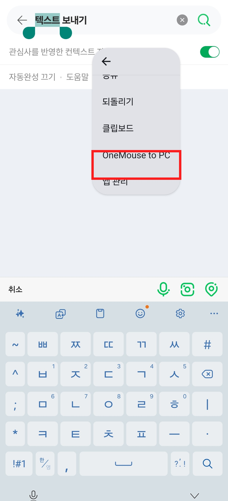

1. Mover o cursor
Deslize um dedo para mover o ponteiro. Levante e reposicione o dedo para continuar.
Guia
A maioria das pessoas só precisa seguir esta ordem. Para os detalhes de rede mais difíceis ver & Segurança técnicaE quando algo não está a funcionar, verifiquem. Ajuda separadamente.
Configuração do Android
Escolha uma conta Google, QR/code pareamento no mesmo Wi-Fi ou Bluetooth. Todos os três métodos precisam Android Acessibilidade para controlar o seu telefone com o mouse e teclado do PC.
Encontre seus dispositivos conectados à internet na lista de contas. Não é necessário QR ou código de emparelhamento.
O acesso à Internet é necessário. Se os dispositivos podem conectar depende da rede. Escolha Wi-Fi ou Bluetooth para usar o OneMouse sem entrar.
Dispositivo ausente da sua conta ou incapaz de se conectar? →Não é necessário entrar no Google. O PC pode usar LAN com fio, desde que esteja conectado ao mesmo roteador que o telefone.
Execute OneMouse em ambos os dispositivos. Abra dispositivos na aplicação PC.
Habilite o serviço em Configurações Android → Acessibilidade → Aplicativos instalados (ou aplicativos Transferidos) → OneMouse. Os nomes dos menus variam de acordo com o fabricante. Verifique também as permissões necessárias para a descoberta, como dispositivos Wi-Fi próximos.
Nos Dispositivos, expanda Outras formas de conectar e escolher o QR & código para este PC. Esta janela mostra o QR e o código de seis dígitos.
Escolha Home → Outras maneiras de conectar → Adicionar com QR ou código de emparelhamento. Digite os seis dígitos no código de número e escolha Conectar, ou use o código de digitalização QR → Abra a câmera para digitalizar QR do PC. Escolha um método.
Confirme que o PC aparece em PCs registrados na tela inicial do telefone. Os dispositivos já registrados não precisam dessa autenticação todas as vezes.
Coincidir colocação de telefone para a posição real do telefone, em seguida, mover o mouse através do passagem de entrada do cursor configurada Se a passagem for estreita, tente o meio da borda primeiro.


Telas de aplicativos reais capturadas com dispositivos de exemplo e códigos. Use o código ou QR mostrados em seu próprio aplicativo PC ao conectar. Selecione uma imagem para vê-lo em tamanho completo.
Bluetooth está em beta. Não é necessário Wi-Fi, Google login, código QR ou código de emparelhamento.
Estas etapas são para Windows ↔ Android. Bluetooth não carrega vídeo remoto. Para ver a tela do PC em seu telefone, use Wi-Fi / LAN ou uma conexão de conta suportada.
Configurações Bluetooth e passos detalhados →Permissão de entrada: Configurações Android → Acessibilidade → Aplicativos instalados (ou aplicativos Transferidos) → OneMouse. Conectado, mas o mouse não vai atravessar? →
Posição do telefone
Arraste cada dispositivo para a sua posição real na tela de arranjo. Cross through the configured passagem de entrada do cursor na borda correspondente. A passagem pode cobrir apenas uma parte dessa borda.
Controle remoto
Em Dispositivos, toque no ícone de controle remoto na linha de um Android emparelhado, e uma janela separada abre mostrando a tela do telefone. A primeira vez que você abri-lo, a aprovação de captura de tela Android é necessária.
Abre uma janela do seu ícone de controle remoto nos Dispositivos ou com o padrão Ctrl+Alt+Shift+1~9. O arrastar do botão direito funciona com extensões de gesto configuradas no navegador do PC, separadamente dos gestos do Android.


Android → Windows
Veja a tela do seu PC, clique por toque, mova o cursor e digite com o teclado do seu telefone. Tanto o PC quanto o Android precisam de aplicativos atualizados que suportem essa funcionalidade.

Escolha a qualidade da imagem e a taxa máxima de quadros no painel de controle. Um PC que suporta mudanças de qualidade ao vivo aplica-os sem reconectar. A resolução real e a taxa de quadros dependem do desempenho do dispositivo e das condições de rede.
Para terminar, utilizar Painel de controle → Desconectar. Desligar o controle remoto deixa o PC em execução. As conexões Bluetooth não carregam vídeo remoto.
Estas animações explicativas mostram o básico do modo do cursor. Elas não são gravações da aplicação.
Deslize um dedo para mover o ponteiro. Levante e reposicione o dedo para continuar.
Mova o ponteiro para cima de um botão e toque uma vez. O clique acontece no ponteiro, não no seu dedo.
Coloque o ponteiro em uma barra de título ou item e segure o dedo parado até que o ponteiro fique azul. Mova o dedo para arrastar, em seguida, levante-o para soltar o item.
Em 1×, deslize dois dedos juntos para rolar o PC. Espalhe dois dedos para ampliar; uma vez ampliado, movê-los juntos para passar a vista.
Gestos do mouse Android
Como habilitar gestos, os sete padrões de curso e limites de suporte.
Em Configurações → Datilografia e área de transferência, ligue os gestos do mouse e escolha os aplicativos (desativados por padrão). Tanto o PC quanto o Android precisam de uma versão capaz de gesto.
Seleccionar Todos os aplicativos para usar gestos em apps e na tela inicial. Verificar os limites de suporte
Mova o ponteiro do PC para o telefone ou tablet Android e abra um aplicativo selecionado.
A seta e o medidor vertical mostram a intensidade de direção e rolagem com base no comprimento do curso, não na sua posição na página ou numa distância exata.
| Gestura | Acção |
|---|---|
| ← | VoltarDesenhar à esquerda para voltar à página ou tela anterior. |
| → | AvançarDesenhar direito para retornar a uma página depois de voltar. |
| ↑ | Rolar para cimaDesenhe e solte. Cursos mais longos desloquem mais; traços mais curtos desloquem menos. |
| ↓ | Deslocar para baixoDesenhe e solte. Cursos mais longos rolam mais; traços mais curtos rolam menos. |
| ↓ → | Minimizar aplicativoVá para casa sem fechar o aplicativo. |
| ↑ ↓ | RelerAtualizar a página em um navegador suportado. |
| ↑ → | Aplicações recentesAbra a lista de aplicativos recentes para escolher outro aplicativo. |
Arquivos & área de transferência

Capturar & enviar imagens
Capture seu próprio PC ou o dispositivo que você está controlando atualmente. Copie ou salve o resultado da visualização ou envie-o para a área de transferência de um dispositivo conectado.
Se você mudou o atalho, use suas chaves configuradas. Ao selecionar uma região, Esc ou Cancelar fecha a seleção sem enviar uma imagem.

Móvel para PC
Para transferências LAN, escolha o PC padrão na tela inicial do aplicativo móvel e verifique se ele está emparelhado e conectado. Envie arquivos da guia de transferência ou menu de compartilhamento do Android, e envie texto através do OneMouse para PC no menu de seleção.
Em PC Configurações → Geral → Transferência de arquivos → Localização do arquivo recebido, utilizar Mudar pasta para escolher o destino e Abrir pasta para vê-lo. Isto está disponível tanto nos PCs principais como nos sub.




Notificações e respostas
No aplicativo Android, habilitar Enviar notificações para o PC, permitir o acesso à notificação, e selecionar os aplicativos para retransmitir. No PC principal, habilitar as notificações do dispositivo em Configurações → Notificações.
A mesma tela mostra as configurações de histórico e retenção. Mais sobre notificações
Responder aparece quando PC e Android respostas de suporte e a notificação de telefone original oferece uma resposta de texto livre. Digite sua resposta e escolha Enviar ou Ctrl+Enter para enviar através do aplicativo de telefone original (Enter adiciona uma quebra de linha).
Número de atalhos
Com pelo menos dois dispositivos LAN no PC principal, escolha Dispositivos → Editar ordem. Arraste o punho ou use ↑ / ↓; alterações salvar automaticamente, em seguida, escolher Feito. Os números de atalhos de conexão e de janela remota seguem a mesma ordem.
Bluetooth
Bluetooth está em beta. Não é necessário Wi-Fi, Google login, código QR ou código de emparelhamento.
Windows↔Android e Windows↔Windows podem trocar entrada, área de transferência e arquivos diretamente sobre Bluetooth.
Outro PC


Mac · Suporte público
Instale o DMG público no Mac e, em seguida, inicie e gerencie a conexão LAN do OneMouse no Windows. Siga estes cinco passos.
Execute OneMouse no Windows 10/11 e no Mac, com ambos os computadores conectados ao mesmo Wi-Fi ou LAN. As conexões são iniciadas e gerenciadas a partir do Windows.
Permitir Acessibilidade para que o Mac possa executar o mouse recebido e entrada de teclado. No macOS 15+, também permitir Rede Local para descoberta; macOS 13/14 pode não mostrar este item.
Abra dispositivos na aplicação Windows e selecione o Mac detectado.
Digite no Windows o código de emparelhamento de 6 dígitos exibido pelo Mac e, em seguida, confirme o emparelhamento.
Coloque o Mac ao lado da tela do Windows no editor de arranjos. Mova o cursor através dessa borda para controlá-lo e trocar arquivos e conteúdo da área de transferência em ambas as direções.
Tela e sistema de áudio A permissão de gravação é necessária apenas quando você optar por ver ou controlar a exibição do Mac a partir do Windows. OneMouse não captura áudio do sistema.
O Mac Bluetooth está disponível como um beta: habilite-o nas configurações do aplicativo Mac (desativado por padrão). A LAN continua sendo o caminho oficialmente suportado, e o compartilhamento de tela ou janela é somente para LAN.
Permissões
A entrada do Android precisa de Serviço de Acessibilidade; a entrada do Mac precisa de Acessibilidade. A visualização de uma tela remota do Android ou Mac também requer captura de tela ou aprovação de gravação.
Estes atalhos para PC são predefinidos. Em Definições para PC → Atalhos, você pode alterar cada combinação, desligar as ações individuais ou desativar todos os atalhos. Use a sua combinação salva se você a alterou.
| Atalho padrão | Acção e condições |
|---|---|
| Ctrl+Alt+1~9 | PC principal: conecte o controle de entrada ao dispositivo correspondente na lista. Pressione o mesmo número novamente para liberar o dispositivo que você está controlando atualmente. |
| Ctrl+Alt+Shift+1~9 | PC principal: abra a janela remota correspondente ou traga uma janela existente para a frente. Pressioná- la novamente não fecha a janela. Ela usa os mesmos números de dispositivos da LAN como atalhos de conexão; os dispositivos Bluetooth estão excluídos da numeração. |
| Ctrl+Alt+D | Mostrar / esconder a zona de queda rápida. |
| Ctrl+Alt+S | Selecione uma área no dispositivo Windows PC, Mac ou Android que você está controlando e recebê-lo no PC principal. Sem dispositivo remoto sob controle, capture este PC. Ambos os aplicativos devem suportar o recurso, e o alvo precisa de permissão de captura. |
| Ctrl+Alt+V | PC principal: copie um código de verificação enquanto sua notificação de telefone é visível no PC. Ative o relé de notificação de telefone primeiro. |
| Ctrl+V | Receba e cole arquivos compartilhados copiados em outro PC. Sem arquivos compartilhados à espera, a pasta comum permanece disponível. |
| Ctrl+Alt+Backspace | PC principal: imediatamente retorne o cursor para o centro do seu próprio monitor, enquanto controla outro dispositivo. |
Estas são combinações de entrada enviadas para Android, separadas das configurações de atalho do aplicativo do PC acima. A edição de texto depende do suporte no campo de texto e aplicativo alvo.
| Atalho padrão | Acção e condições |
|---|---|
| PrintScreen | Android 11+: capturar a tela do telefone durante o controle direto e enviá-lo para o PC. Permissão de acessibilidade é necessária. |
| Alt+Shift+↑ / Alt+Shift+↓ | Aumentar / diminuir o brilho da tela Android. Requer permissão para modificar as configurações do sistema. |
| Alt+↑ / Alt+↓ | Aumentar / diminuir o volume de mídia Android. |
| Alt+Tab / Alt+Shift+Tab | Alterne os aplicativos / ciclo recentes ao contrário. Release Alt para inserir o aplicativo selecionado. |
| Ctrl+A / Ctrl+C / Ctrl+X / Ctrl+V | Selecione tudo / copiar / cortar / colar em um campo de texto suportado. |
| Ctrl+Insert / Shift+Insert / Shift+Delete | Copiar / colar / cortar em um campo de texto suportado. |
| Ctrl+Z | Desfazer em aplicativos e campos de texto que o suportam. |
O mapeamento de atalho padrão do Windows envia Ctrl como Comando e Alt como Opção. Você pode mudar para o mapeamento modificador nativo do Mac nas configurações do teclado da aplicação Mac. Isto não significa substituir Ctrl por Comando nos atalhos do aplicativo Windows acima.